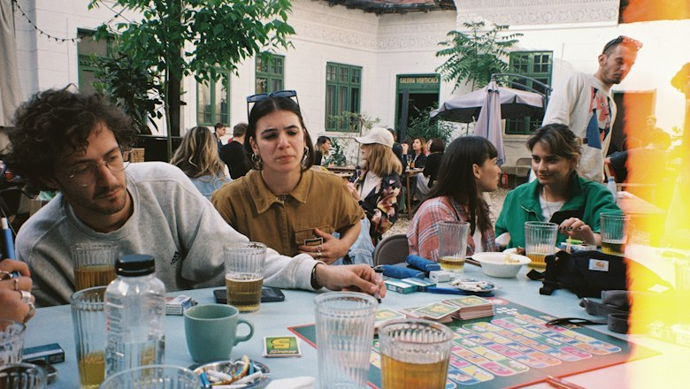

Your request is with Andrii. It stays open until Saturday — events without a date keep requests for 14 days.
Waiting

~3 km
- Free
Kyiv Games Club · Podil
Bringing Codenames and Wingspan. Anyone who knows the rules or wants to learn.
Andrii · Verified · 12 meetups attended · Replies quickly